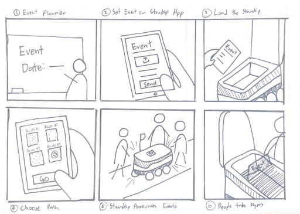

Learning Studio
Experience Studio
Starship
Fitness App
Museum
Starship
Intro
Starship robots display a wide range of possibilities outside of food delivery. In Winter 2025, I was part of a group trying to brainstorm other potential solutions for Starship robots other than delivering food. My team decided to use Starship robots to advertise events around campus.
Process
Throughout this project, we researched Starships, club-student relations, advertising methods, and more. After researching these topics, we interviewed students who have used Starship robots to receive input on the app experience and information regarding possible pain points users experienced. After gathering insights on the current experience using the delivery service, we began prototyping and discussing possible solutions for our event promotion idea, dubbed Promo-Bot.
Findings
After receiving feedback from peers, teachers, and club members, we ideated our concept and created our final storyboard.
Contributions
Interviews & User Testing
- Interview Protocol
- Initial interview/interview analysis
- Feedback protocol
Documentation/Presentation
- Conclusions
- References
- Proofreading
- Initial presentation design
Fitness App
Intro
During Spring 2025, my final project was to enhance any existing fitness tracker app. We chose to enhance the Apple Fitness app. My group’s solution was dubbed “Sun,” an additional ring on the Fitness app.
This ring utilizes the Apple Watch’s ambient light sensor, which can detect when you’re outside. By spending at least 20 minutes each day outside, you can close your ring (and obtain numerous health benefits!)
Process
During the brainstorming process, we were trying to think of a way to add something new to Apple’s Fitness app. However, our challenge was that the three rings they have (Move, Exercise, and Stand) already encompass a lot of physical activity. So we thought of another way to be healthy: sunlight. Our additional ring keeps track of how often you go outside to make sure you’re getting enough sunlight, which can improve physical and mental health.
Prototype
We used Figma to design and test our prototypes for the app UI.
Contributions
- Concept/project idea
- Research on health benefits from the sun
- Low-fidelity prototypes
- SUN iPhone and Apple Watch screens
Mascot Museum
This assignment is in-progress. Come back in 2026!
Nourysh
WalterPicks
Nourysh
Intro
I worked on Nourysh, an e-commerce startup that empowers entrepreneurs and small businesses by letting them create their own digital marketplace on Nourysh’s website.
My team’s goal during this project was to create a high-fidelity, mobile use case prototype in the form of a mobile app.
Process
My team kicked off our secondary research by performing a website audit on Nourysh. We created an information hierarchy for the website so we could see what the most important screens were to incorporate into our app.
We also examined other shopping apps to gain inspiration for our design. We then voted on what features from all the websites and apps we liked best.
After completing our secondary research, we began to perform interviews with users on Nourysh to gather pain points and suggestions for our mobile use case.
Prototype
With research completed, we began to design our screens. We created sketches, low-fidelity prototypes, and then performed testing on our mockups. We then did a codesign workshop with our project sponsor to inform our design decisions and create our high-fidelity prototype.
By the end of our project, we had given Nourysh documented research on their competitors, a high-fidelity prototype, and our design documentation.
Contributions
- Secondary research
- Assisted in creating and hosting interviews
- Low-fidelity prototypes
- Documentation
WalterPicks
This assignment is in-progress. Come back in 2026!